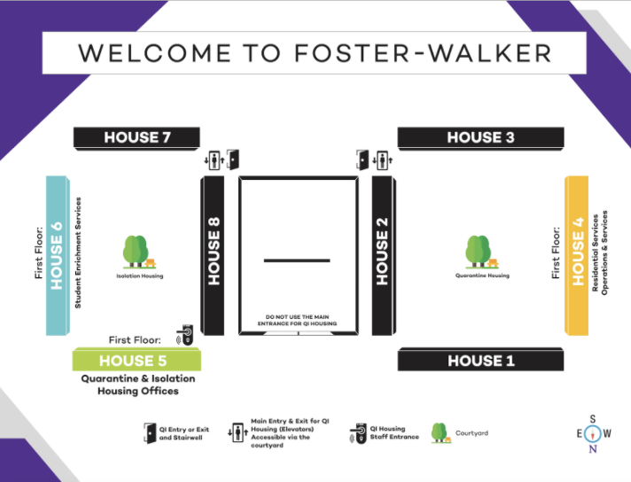
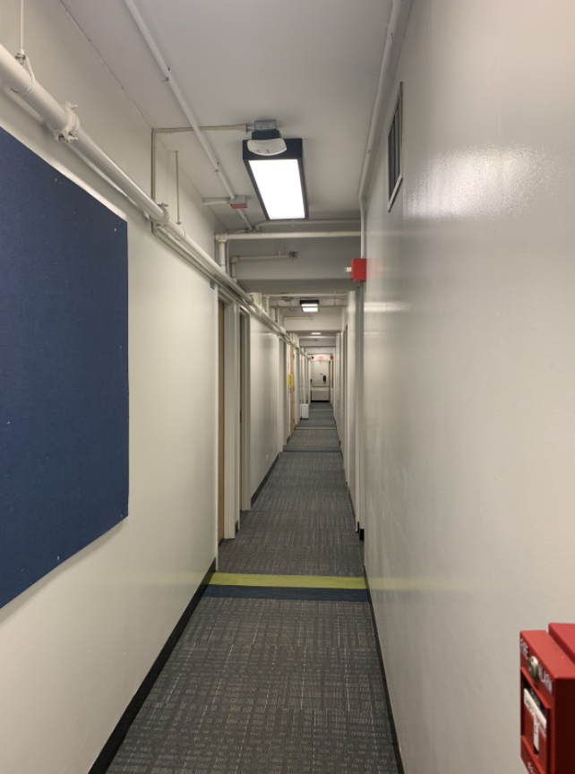
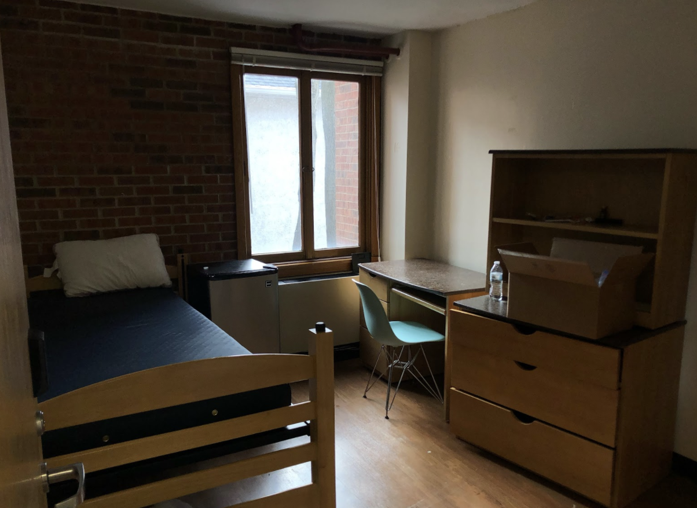

If there is one thing that brings students on campus together while simultaneously ripping them apart, it’s Quarantine/Isolation (Q/I) Housing. Students who are contact-traced receive an email that starts off with the above paragraph, and a follow-up email includes information on quarantine rules, packing and mental health assistance. They stay in quarantine housing until they receive a negative test on the seventh day. Those who test positive for COVID-19 end up in isolation housing and go through a similar process until their 10-day quarantine is complete.
Below is a collection of stories from students who found themselves in Q/I, either after contracting COVID-19 themselves or after being contact-traced. Some used the quiet time to get ahead on schoolwork, while others found the monotony and loneliness of Q/I almost too much to bear.
Aidan O’Neil
McCormick first-year Aidan O’Neil compares Q/I housing to a Scandinavian prison, “ you've just moved in, you don't have much, so it feels like an empty, bleak room…. It just feels less homey, and you're also stuck in there by yourself, isolated,” he says.
O’Neil was contact-traced right after the campus-wide Wildcat Wellness period, after eating in a common room in late January with someone who tested positive. He was moved to Foster-Walker, which houses contact-traced students.
“When you first get there, they give you a coloring book, a Rubik's cube and other things that a 10-year-old would preoccupy themselves with,” O’Neil says. “But what I brought that was particularly helpful was my small Keurig because I could make coffee that way.”
Although it was frustrating to see everyone socialize after the first two weeks of being on campus, O’Neil says he was grateful he had friends who were also in Q/I during his stay, with whom he would Zoom for an hour every day.
O’Neil took advantage of the near-empty hall by blasting music on his speaker to pass the time. He recommends bringing room decor to Q/I to make it feel a bit more like home, or at least like an actual dorm room.
After being isolated and inside for so long, O’Neil says he has definitely learned to appreciate even the smallest things in life.
"I remember walking out of my room on day six to get my COVID test, and being hit by the wave of fresh air was really nice,” O’Neil says.
Madison Bruno
Medill first-year Madison Bruno was contact-traced after her roommate tested positive for COVID-19. She was able to participate in group Zoom calls with friends who were also in quarantine, and that shared experience has led to friendship outside of Foster-Walker’s walls.
“I'm pretty close with all the people who got contact-traced with me,” Bruno says. “It’s like a club that no one wants to be a part of.”
Bruno says the lack of in-person interaction and fresh air took a significant toll on her mental state. She hardly saw anyone during her entire quarantine period, and was only allowed outside to get COVID-tested at Searle on the seventh day.
Although she was able to keep her emotions in check most of the time, mealtimes were where she hit her breaking point. Bruno says she wasn’t able to eat a meal without crying, even though the quality wasn’t much different from what it had been during Wildcat Wellness.
“This only happened once, but the chicken was raw, and that really just was not it,” Bruno says. “I was not in a good place, and when I cut open the chicken and it was pink, I hung up on my mom and cried.”
Bruno recommends keeping busy while in quarantine through any means necessary, and to ask for what you need. She found that it was difficult at times to get consistent, accurate information about things like release times and quarantine rules, so self-advocacy was something she had to use while in Q/I.
“Just grin and bear it,” Bruno says. “Try to Zoom people while you're in there. Get ahead on work so you can hang out with people when you get out. Be a little bit assertive when asking for stuff because they'll bring you pretty much anything.”
Everything, that is, except for fitted sheets.
“I asked for [one] and they said they could give me tape,” Bruno says.
Alia Marshall
Weinberg second-year and field hockey team member Alia Marshall entered the Foster-Walker isolation on Jan. 6, only three days after arriving in Evanston. She thinks she contracted COVID-19 after flying into Midway on a packed plane or possibly from someone back home. Although she wouldn’t call isolation a pleasant experience, Marshall was able to get through her time in Foster-Walker without too much suffering.
“It was a little bit lonely not being able to see anybody or go outside. But every morning [a Q/I staff member] calls you, and they just ask you how you're doing, if you need anything,” Marshall says.
Marshall says she appreciated how attentive the Q/I staff was. One positive interaction happened when Marshall forgot to fill out the meal form that must be submitted by 8 p.m. every night. She missed lunch, but a Q/I employee called her at dinner time and got her order while picking up food at the dining hall.
Marshall’s biggest support during her quarantine was her mom, who Marshall says called her every day. Additionally, Marshall brought lots of snacks that made her Q/I housing feel less foreign. Each room comes with a mini-fridge, and each floor has a microwave, so Marshall recommends bringing plenty of comfort food.
“Don’t underestimate how much you’re going to eat,” Marshall says. “It was five days in and I was like, ‘I don't have any more food.’”
Peyton Halsey
“When I first got there, it was really scary,” Weinberg second-year and field hockey team member Peyton Halsey says. “They just sent you up in the elevator, and you walked in this [hallway] that was really empty, all the doors were open. And then you get your room which is super small.”
Halsey tested positive for COVID-19 after her roommate, Marshall, started showing symptoms. She had already started quarantining in her off-campus apartment after Marshall tested positive, and moved to Foster-Walker for seven days to protect her third roommate, who never ended up contracting the virus.
As Halsey was in isolation housing in Foster-Walker, and everyone there already had COVID-19, she was allowed to socialize with others in common rooms socially-distanced with masks on. This meant she could see her roommate regularly, which Halsey says helped her feel less alone.
“Honestly after the first day, it was fine, it wasn't scary,” Halsey says. “I thought I was going to freak out but I was fine.”
Halsey says she was directed by her trainer not to exercise in order to avoid an elevated heart rate and subsequent health issues. Her quarantine period took place before the field hockey season started, so Halsey missed some pre-season training.
“It kind of sucked not being able to train,” Halsey says. “We weren't even allowed to exercise at all, other than yoga, but I think maybe it was good to just rest my body, if that makes sense.”
Halsey recommends finding an activity that will make you leave your phone and bed every day, even if only for an hour. For her, that activity was yoga. She was able to obtain a yoga mat when she arrived at Q/I.
“Once you have [a yoga mat] and it's sitting on your floor every day, it'll make you want to get up and do something even if it's just a light workout or mindfulness,” Halsey says. “I think that's something important to keep in mind so you're not just staring at your screen for literally the whole time.”
Lena Sauter
Weinberg second-year Lena Sauter found her way to Foster-Walker after her suitemate tested positive the first week she arrived on campus. Sauter wasn’t positive for COVID-19 but says she still experienced a drop in motivation while in quarantine.
“I could feel for sure my productivity just drop off,” Sauter says. “It took me like four hours to do a one-hour reading.”
Sauter recommends bringing a desk lamp to make up for the lack of natural light in the Foster-Walker rooms. She hopes she won’t have to take her own advice: because she was only contact-traced, there is the potential that she could go back at any time.
Sauter didn’t find the experience enjoyable, but says she appreciated the peace-of-mind brought by separating herself from others and preventing potential outbreaks.
“Knowing that there was no chance, if I had been exposed, of exposing anyone else obviously made me feel better,” Sauter says. “I don't really care if I get it, I just don't want to give it to anyone else.”
Sarah
McCormick first-year Sarah*, whose name has been changed for anonymity, was contact-traced on Feb. 4 after eating dinner with someone who contracted COVID-19. Loneliness hit Sarah especially hard; she only lasted three days in Foster-Walker before her mom drove to Evanston and took her home to finish the rest of her quarantine.
“It's more depressing than you could ever imagine,” Sarah says. “It's literally like a plastic bed with two sheets and this plastic blanket. The windows don't open, it’s depressing fluorescent light. It really got to me. I really don't even want to be dramatic about it, but it made me so sad.”
The lack of human interaction, Sarah says, was the worst part of quarantine. As she was in quarantine housing, there was still a chance of COVID-19 spreading between residents, which meant that Sarah was unable to socialize in common areas.
“I don't think I've ever gone 40 hours without talking to another person in my entire life,” Sarah says. “I think that freaked me out. You can FaceTime people, but it’s not the same.”
Now back on campus, Sarah is taking more precautions to make sure she doesn’t end up in Foster-Walker again.
“I will definitely do whatever I can to not go back to quarantine,” Sarah says.